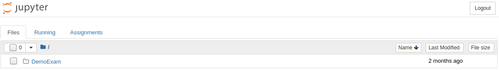
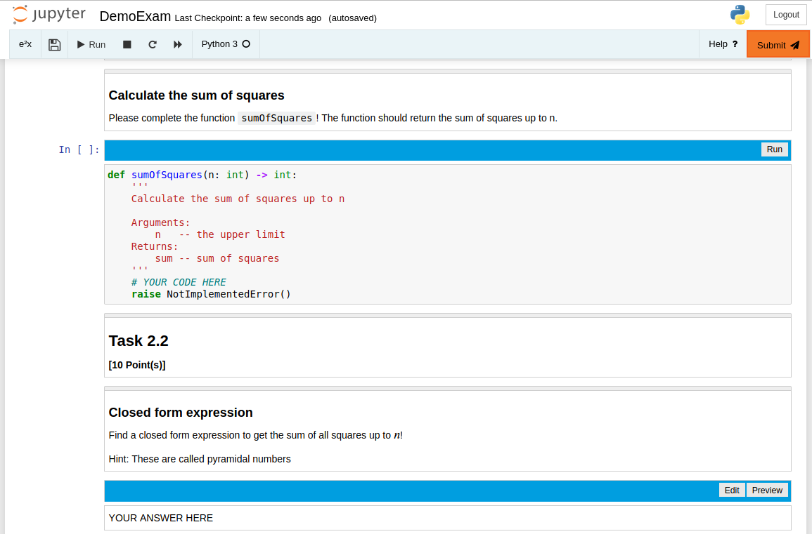
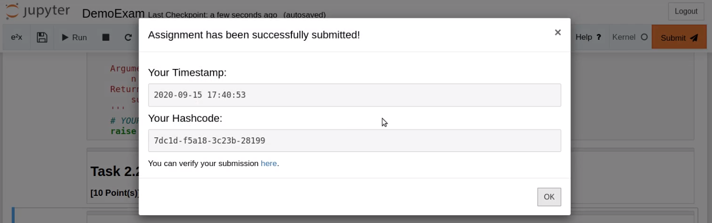

Student Exam Mode¶
The student exam mode includes all extensions from the student assignment mode. Additionally it comes with a very restricted notebook interface.
Restricted Tree¶
The restricted tree extension blocks students from creating new files or notebooks. It also removes the shutdown button so students can’t accidentally shutdown their notebook server.
Run Control¶
Run control blocks students from unrendering read-only nbgrader cells.
Remap Keys¶
Remap keys blocks and changes some keyboard shortcuts.
By default executing the last cell in a notebook via Shift-Enter will append a new cell to the notebook. After remaping the keys it will just execute the cell.
Shortcuts for copying cells, deleting cells or inserting cells are also blocked.
Exam View¶
The exam view extension changes the look of a Jupyter notebook. It removes all menus and toolbars and replaces them with a limited menu that only includes kernel information, buttons for saving the notebook, running cells, stopping cells or restarting the kernel.
Custom Submit¶
In exam mode a submit button is added to the menu that lets students submit directly from their notebook. When students click this button, the notebook is saved and a dialog is opened displaying the timestamp and hashcode of the submission.
Note
The hashcode is displayed only if your assignment is set up accordingly. See Hashing of student submissions.
Activate Exam Mode¶
To activate student exam mode execute the following in a terminal:
python -m e2xgrader activate student_exam --sys-prefix
Warning
Exam mode needs the Custom Exchange. See Configuring the Exchange.